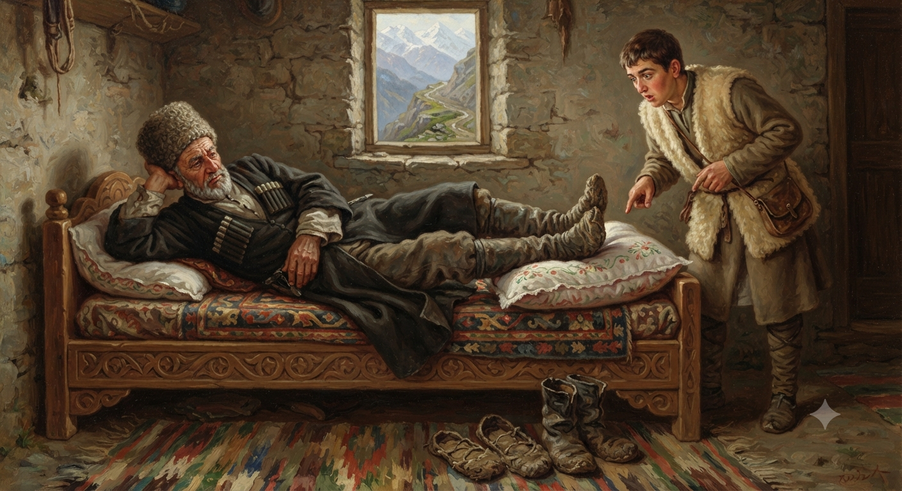

И.А. Дахкильгов. Хьехаме дувцарш - поучительные рассказы-притчи.
И.А. Дахкильгов. Хьехаме дувцарш - поучительные рассказы-притчи. Из ингушского фольклора.

ГӀайба когашка биллаб
Цхьа къонах уллаш хиннав, керта кӀала а ца булаш, гӀайба когаш кӀала а билла. Цхьан гӀулакха хьачуваьннача лоалахочо цецваьнна хаьттад цунга: - Ва хьанехк, ер фуд хьа? Наха кертага бехкаш бола гӀайба когашка а билла уллаш ма вий хьо! - Уллаш а ва, гӀайба когашка а биллаб, била боагӀандаь. Гаьннача юртара гӀаш со цӀавоагӀаш, сай наькъа гӀолла мара хьава ца везаш вола со, Ӏовдалча са керто, никъ лоацбе беза, дукъан тӀагӀолла тӀехвала веза, аьнна, айса бе безачул шозза халагӀа, бӀаьхагӀа никъ байтар цо сога. Цхьаккха лазар а хӀама а хиннадац цунна, хӀаьта цхьаккхача хӀаманна бехке боаца са ши ког, дувца хабар доацаш, эттаб, цудухьа гӀайба са когашта боагӀа, керта багӀац. Хезадеций хьона, Ӏовдалча керто когашка никъ кхихьийтаб, оалаш?
РУССКИЙ
Подушку положил в ногах
Лежал на кровати некий мужчина, подложив подушку не под голову, а под ноги. Зашедший по делу сосед поинтересовался: - Что я вижу? Подушку, которую люди кладут под голову, ты положил под ноги. Почему так? - Да потому, что на подушке должны лежать у меня ноги, а не голова. Из дальнего селения пешком направился я домой. Мне бы идти по горной дороге, так нет же, дурная моя голова посоветовала сократить путь и идти через горный хребет. Послушался я плохого совета и проделал путь вдвое длиннее и тяжелее. Голова моя сидит себе на плечах, не болит, а ноги мои, совершенно ни в чем не повинные, устали так, что и словами не передать. Вот почему подушку заслужили ноги, а не голова. Разве ты не слышал, что дурная голова заставляет ноги проделать длинный путь?
ENGLISH
He placed the pillow at his feet
There was a man lying on his bed with the pillow under his feet rather than under his head. A neighbour who had dropped by on business asked, 'What do I see here? You've put the pillow that people usually put under their heads under your feet." Why is that?" "Well, because my feet should be resting on the pillow, not my head." I walked home from a distant village. I should have taken the mountain road, but my foolish head advised me to take a shortcut over the mountain ridge instead. I took that bad advice and ended up with a journey that was twice as long and twice as hard. My head sits comfortably on my shoulders with no pain, but my feet, though they've done nothing wrong, are so tired that I can't even describe it. That's why my feet deserve the pillow, not my head. As the saying goes, a foolish head makes the feet walk a long way.
НОХЧИЙН
ГӀайба когашка биллина
Цхьа къонах Ӏуьллуш хилла, коьртан кӀел а ца буьллуш, гӀайба когаш кӀел а биллина. Цхьана гӀуллакхна схьачуваьллачу лулахочо цецваьлла хаьттина цуьнга: - Ва хьенех, хӀара хӀун ду хьан? Наха коьрте бохкуш болу гӀайба когашка а биллина Ӏуьллуш ма вай хьо! - Ӏуьллуш а ву, гӀайба когашка а биллина, билла богӀудела. Геннарчу йуьртара гӀаш со цӀавогӀуш, сайн новкъахула бен схьаван ца везаш волу со, Ӏовдалчу сан коьрто, некъ бацбан беза, дукъан тӀехула тӀехвала веза, аьлла, айса бан безачул шозза халах, бехах некъ байтира цо соьга. Цкъа а лазар а хӀума а хилла дац цунна, хӀетте а цхьанна хӀуманна бехке боцу сан ши ког, дийца хабар доцуш, хӀоьттина, цундела гӀайба сан когашна богӀу, коьртан багӀац. Хезнадеций хьуна, Ӏовдалчу коьрто когашка некъ кхехьийтина, олуш?
ПОГОВОРКИ
Водаш-лелаш, - тӀеххьара а кхача везача дӀакхаоач. Кто ходит и ищет, тот свое находит.ДегӀ боча даккха а мегаргдац, хӀичий даккха а мегаргдац. Тело нельзя ни баловать, ни изнурять.Керто болх ца бича, когаша никъ кхихьаб. Если голова не работает, ногам работы прибавляется.ЛадувгӀаш ваьгӀар коташагӀа хиннав лувш хинначох. Молчавший в выигрыше перед говорящим.Наькъах ихачо цхьа никъ кхихьаб, новкъазара лийначо ши никъ кхихьаб. Кто шел по дороге, проделал один путь, а шедший по бездорожью проделал двойной путь.Сецца араваьннар садовлехьа дӀакхоач. Кто рано утром отправился в путь, тот до темноты дошел (до места).Ше баьккха лоам боккха хет. Гора, которую сам одолел, кажется самой высокой.Ши ког бӀайхагӀа лелабаьр унах цӀенагӀа хургва. Здоровее будет тот, кто держит ноги в тепле.Ши кхакха кӀала билла, цаӀ тӀабиллар висав; цаӀ кӀала билла, шиъ тӀабиллар веннав. Подложивший две овчины и одною накрывшийся, спасся; подложивший одну овчину и двумя накрывшийся, умер.Ӏовдала корта – дегӀана жожагӀате, хьаькъале корта – дегӀана ялсамале. Дурная голова – ад для тела, умная голова – рай для тела.Ӏовдалча керто когашка бала бахь. Дурная голова ногам покоя не дает.Ӏовдалча саго кхаь денна балла боа никъ шера баьб. Путь, который можно пройти за три дня, дурень проходит за год.